Portes & Portails
Portail villa prestige dorures

Portes & Portails
Portail contemporain noir & or

Portes & Portails
Portail terracotta géométrique

Escaliers
Escalier colimaçon extérieur
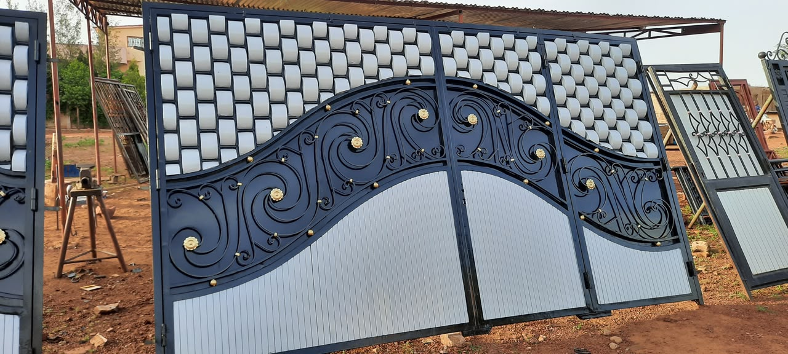
Portes & Portails
Portail natté & fleurs dorées

Portes & Sécurité
Porte d'entrée nattée sécurisée
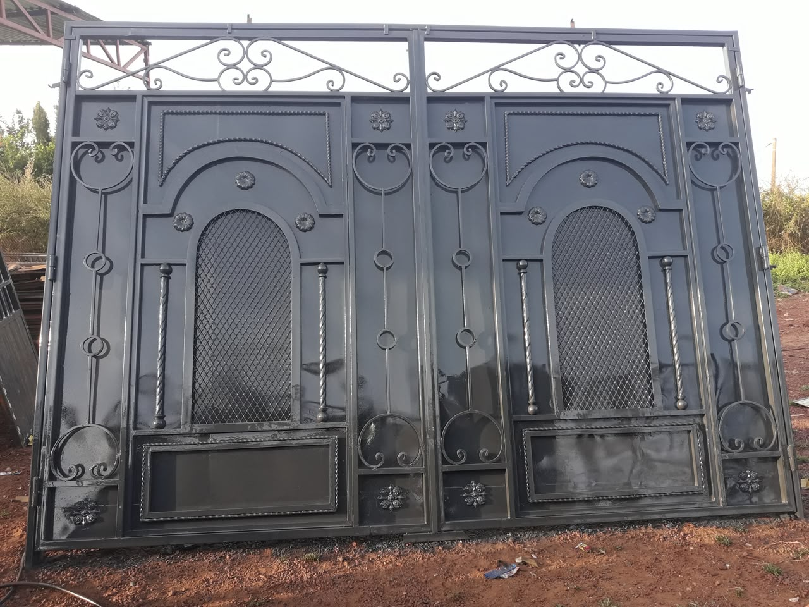
Portes & Portails
Portail monumental fer forgé
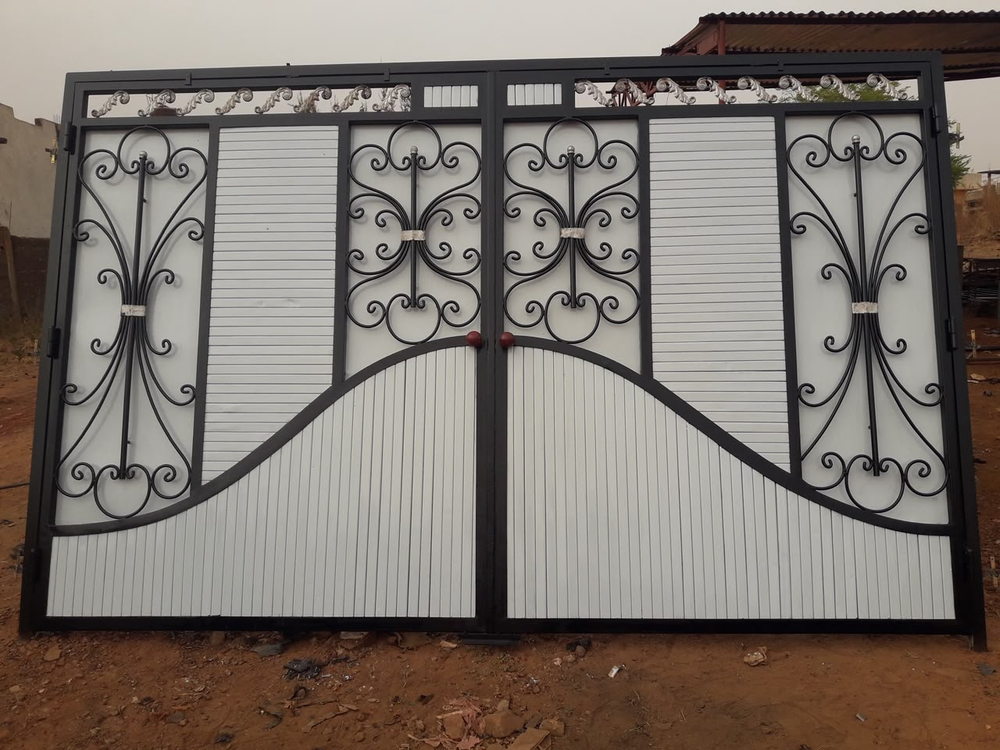
Portes & Portails
Portail bicolore blanc & noir

Portes & Portails
Portail cuivre matelassé
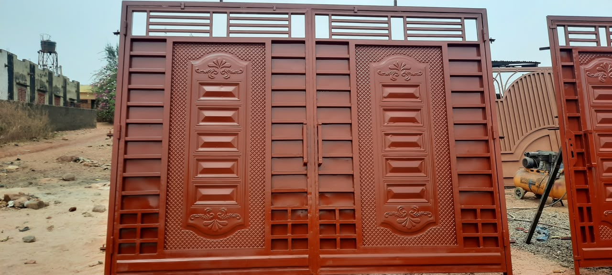
Portes & Portails
Portail cuivre moulures relief
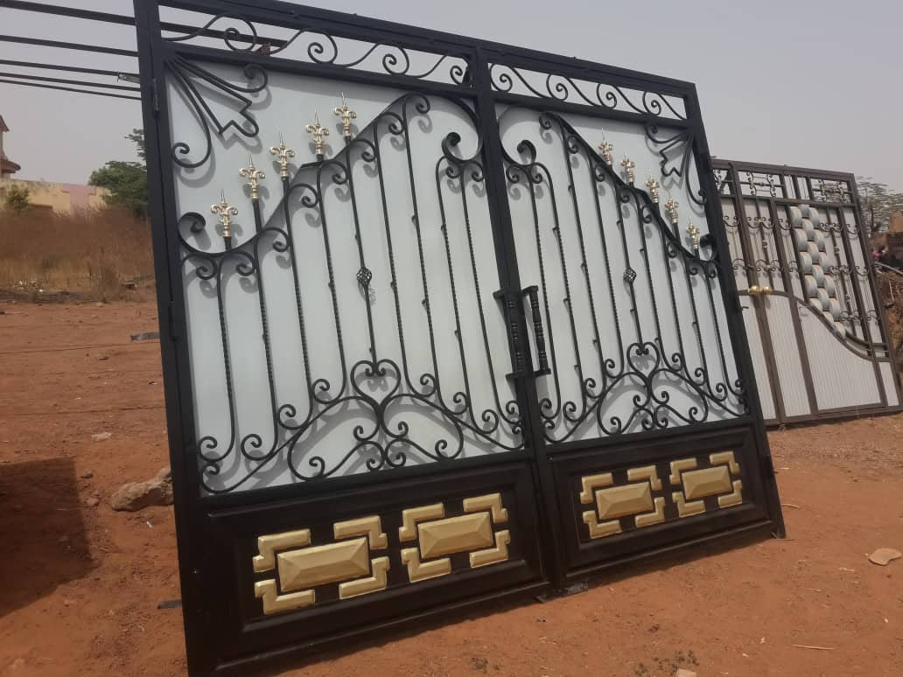
Portes & Portails
Portail fer forgé artisanal
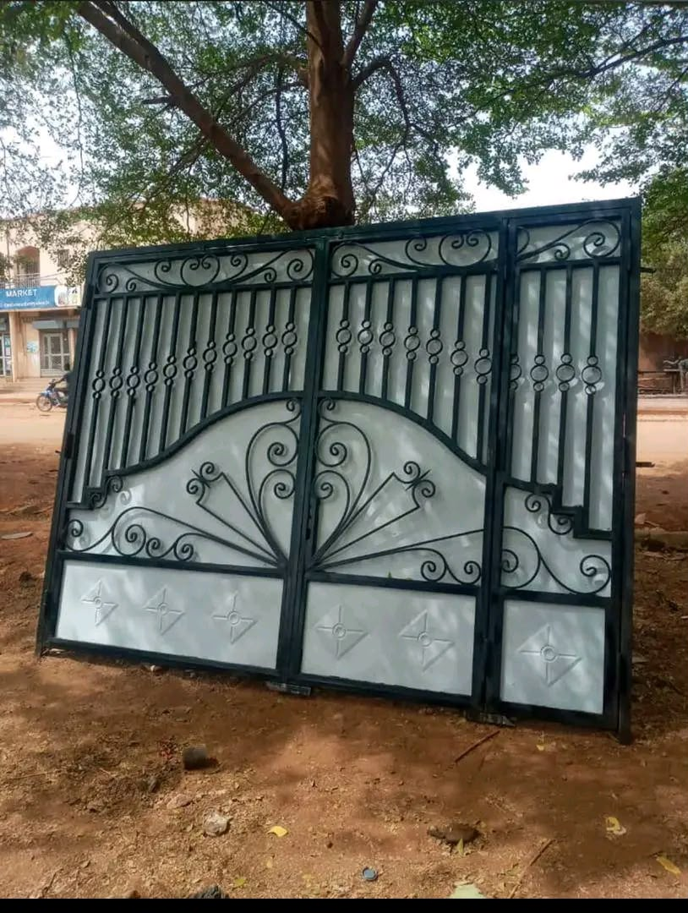
Portes & Portails
Portail coulissant motif solaire
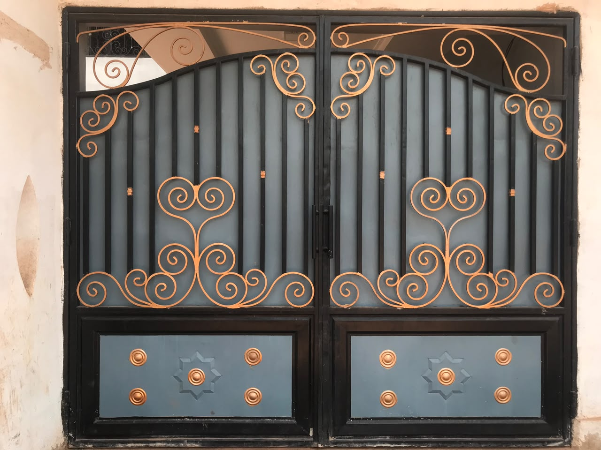
Portes & Portails
Portail cour noir & or
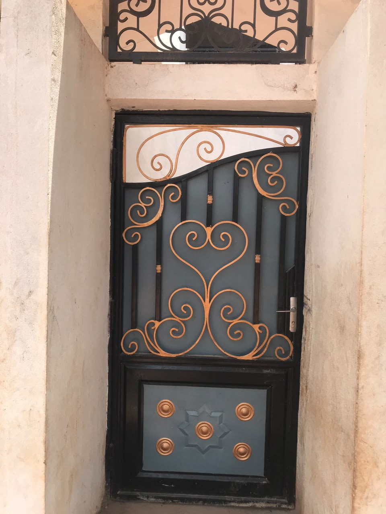
Portes & Sécurité
Portillon piéton sécurité or

Vitrages & Menuiserie Alu
Porte vitrée alu & verre teinté

Vitrages & Menuiserie Alu
Fenêtre alu & grille forgée

Miroiterie & Agencement
Dressing alu & miroirs
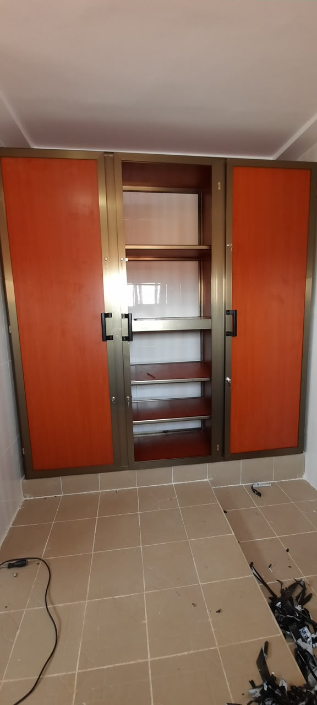
Agencement Métallique
Armoire placard aluminium
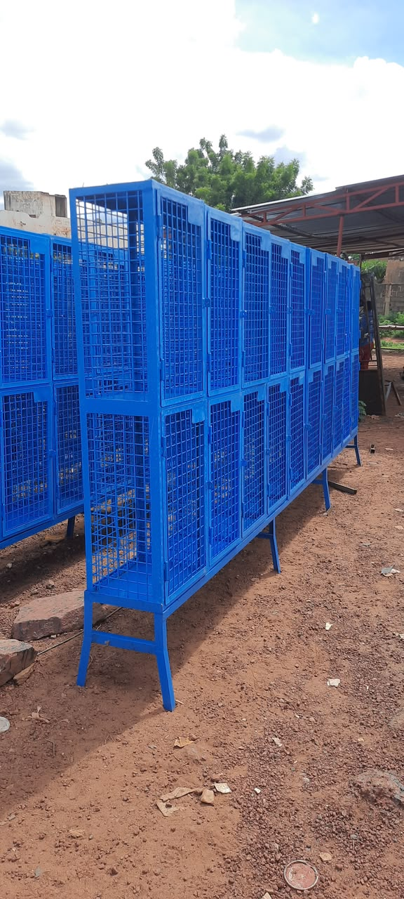
Structures & Métallerie
Casiers industriels grillagés
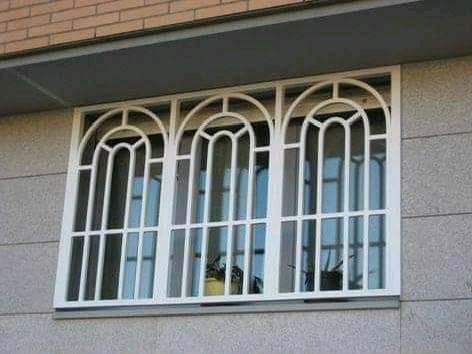
Structures & Sécurité
Grille cintrée pour fenêtre

Portes & Portails
Portail battant atelier TMV
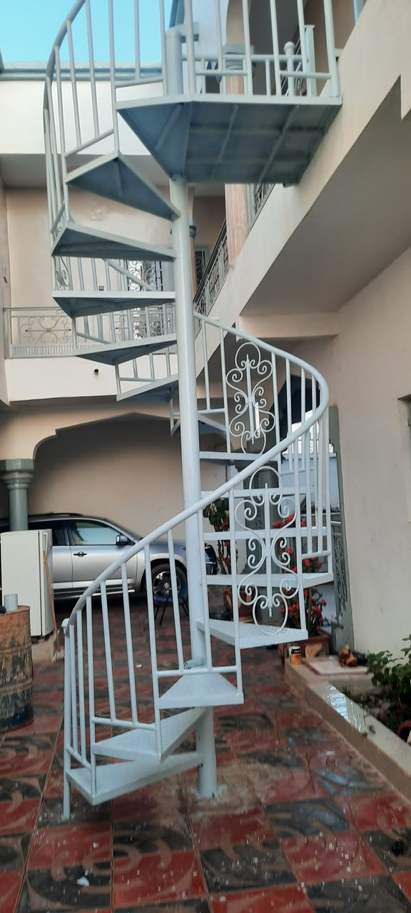
Escaliers
Escalier colimaçon hélicoïdal

Portes & Portails
Portail ajouré découpe laser

Baies vitrées
Baie vitrée coulissante salon

Escaliers
Escalier intérieur design

Garde-corps & Rampes
Balustrade Inox 316 & Verre

Garde-corps & Rampes
Rampe d'escalier inox sécurisée

Vitrages & Vitrines
Vitrine commerciale panoramique
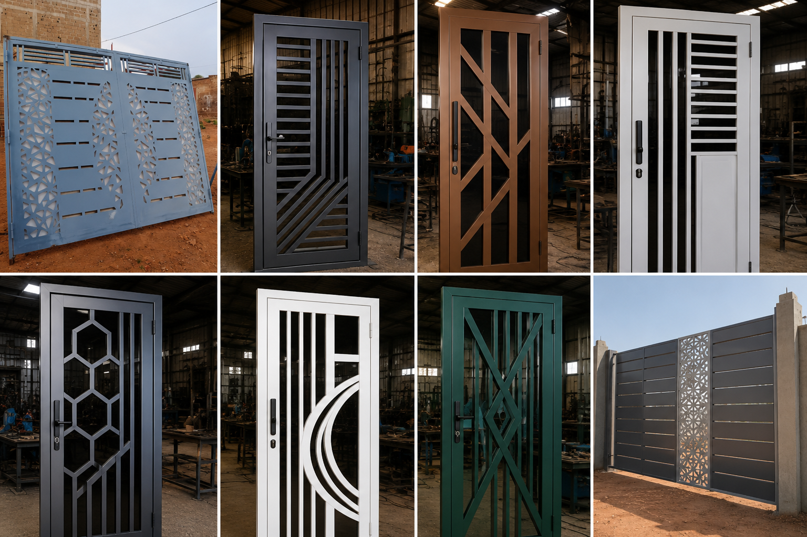
Baies vitrées
Baie vitrée fixe d'angle

Structures & Charpentes
Ossature métallique industrielle
Votre projet, notre prochaine réalisation
Transmettez-nous vos mesures ou une photo de modèle souhaité pour une estimation gratuite.